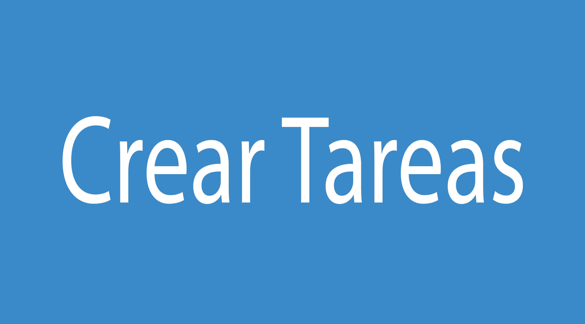
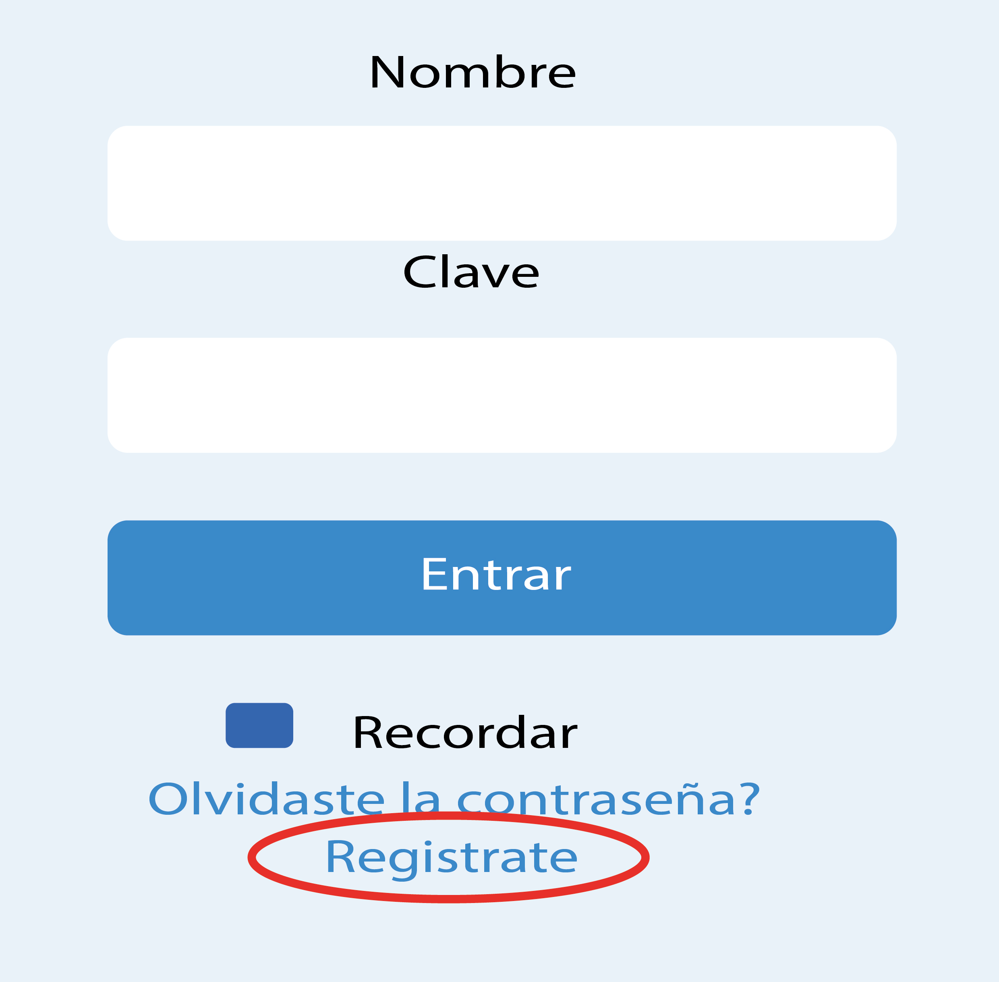
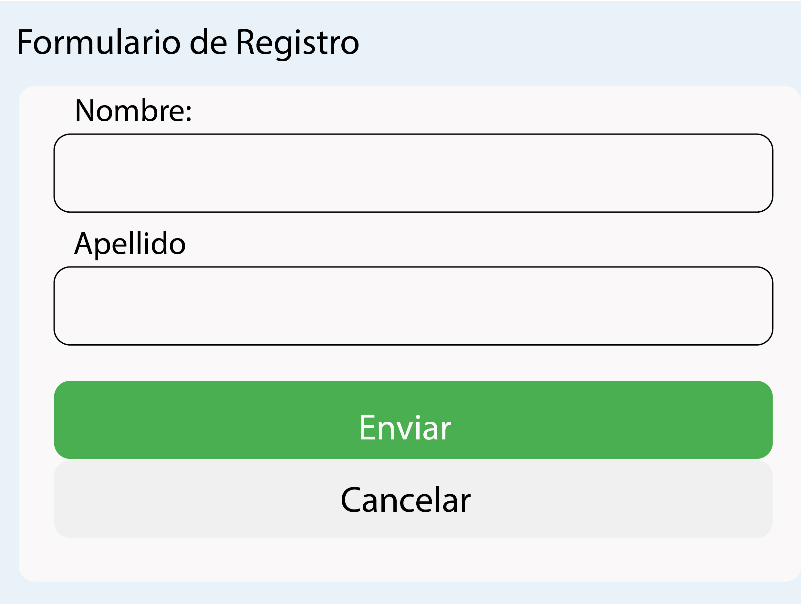

Preguntas frecuentes sobre la pagina
¡Bienvenido/a a nuestra sencilla página web para la gestión de tareas grupales e individuales! Aquí puedes crear tarjetas para informar a tus compañeros de equipo sobre lo que estás trabajando o sobre las tareas que necesitan realizar.
-
1) Para empezar, simplemente presiona el botón 'Crear Tarea'.

Luego podrás ingresar un título y una descripción de la tarea que estás asignando o que necesitas realizar.
-
2) En la sección de usuarios, selecciona el nombre del usuario al que le estás asignando la tarea
-
3) En la sección de estado, podrás ver el progreso de la tarea: si está completada, en proceso o aún sin asignar en caso de que no hayas seleccionado a nadie.
-
¡Es así de simple! Comienza a organizar tus tareas de manera eficiente y colaborativa.
Para comenzar a utilizar Task Manager, sigue estos sencillos pasos:
- 1) Dirígete al menú y selecciona la opción 'Login'.
- 2) En la página de inicio de sesión, haz clic en
'Registro'.

Esto te llevará directamente a un formulario de registro. - 
- 3) Completa el formulario con tus datos y una vez aceptado, regresa a la sección de login.
- 4) Ingresa tu nombre de usuario y contraseña en los campos correspondientes.
- 5) Haz clic en el botón 'Entrar'.
- 6) ¡Listo! Ahora estarás listo/a para crear y gestionar tus tareas.
Si deseas contactarnos por cualquier motivo, sigue estos pasos:
- 1) Desplázate hacia abajo hasta que encuentres el apartado 'Contáctanos'.
- 2) Haz clic en esta sección y serás dirigido/a a un formulario de contacto.
- 3) Completa el formulario con tu nombre, correo electrónico y la razón por la que deseas contactarnos.
¡Estamos aquí para ayudarte! No dudes en contactarnos si necesitas asistencia adicional o tienes alguna pregunta. ¡Gracias por utilizar Task Manager!
nosotros somos un pequeño grupo de estudiantes aprendiendo a programar. Para conocer más sobre nuestro equipo, visita la sección 'Estudiantes' donde podrás ver quiénes colaboramos en la creación de esta página. ¡Estamos emocionados de tenerte a bordo! Si tienes alguna pregunta o necesitas ayuda, no dudes en contactarnos. ¡Gracias por utilizar Task Manager!